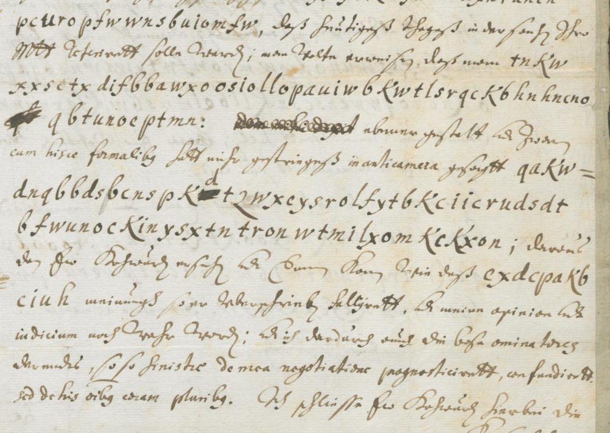

At a glanceCiphertext-only break · complete
- The letter
- Wilhelm von Fürstenberg, Vienna, to Jobst Edmund von Brabeck, dean of Münster, 10 July 1659, in German with Latin phrases. Five passages are in cipher, each flagged by a mark in the margin; the clear text of the letter is not transcribed here.
- Where
- Landesarchiv NRW Abt. Westfalen, W 004 (Manuskripte VI) Nr. 52, images 85–86; the wrapper (image 84) reads “Geheime Schrift nebst Schlüssel”. Not on DECODE.
- The cipher
- Letters, not numbers: at the odd places of a run the plain letter is the cipher letter moved back 1 on the alphabet a–z without j and v, at the even places moved back 8 (a Vigenère with the key “bi”); the count restarts at each of the five runs.
- How the key was found
- The period came from the index of coincidence of the odd and even places apart (0.065 and 0.080, against 0.052 together), and the two shifts from a letter-frequency fit of each, with no crib. Refitted on three runs, the shifts read the other two: 159 of 159 letters.
- What it says
- The president of the Aulic Council (taken to be), Count Oettingen, and Prince Auersperg say that the Prince (taken to be the Prince-Bishop of Münster) will have the judgement in his favour without any condition; 700 Reichstaler are promised to the referent.
- Credit
- Transcription, key, tests and reading by WAINUT, a Dutch AI company (https://github.com/WAINUTAI), working with AI agents, working with AI agents (pull request #460). The integration check of 12 November 2026 re-ran the tests, added controls with a German language model and compared the images.
- Still open
- A book on the ciphers of Münster that may print this letter was not seen; the clear text of the letter is not transcribed; one sign (c or e) is uncertain.
01 The letter
The finding aid describes the item as a ciphered letter with the key of Wilhelm von Fürstenberg to Edmund von Brabeck, 1659. The wrapper is on image 84; the letter is on images 85 and 86, signed “Wilhelm von Fürstenberg” and dated “Wien di 10 Julij 1659”; image 87 is the address leaf, to “Jodoc Edmund de Brabeck, Doien de Munster”, with the seal. Five passages are in cipher, in a separate round script, flagged in the margin. They are 38, 60, 88, 73 and 86 letters long, 345 in all, 54 words.

The key sheet on image 86 is another system. The leaf filed with the letter, “Schlüssel zur Ziffer-Schrift”, is a table from letters to numbers (A 10, B 12, C 16 … Z 56). The letter contains no numbers, and a search for a mapping from letters to digits that turns pairs of letters into the table’s numbers found nothing. So the filed key is not the key of these five runs, and which letters of the Münster correspondence it serves was not traced. The catalogue entry that led here called the item a ciphered letter “with its key”; for this cipher that was not so.
02 The cipher and its key
The index of coincidence of all 345 letters is 0.052, which is low for German or Latin, but of the odd places alone 0.065 and of the even places alone 0.080, which points to two alphabets used in turn. A Caesar fit of each set of places against German and Latin letter frequencies gives shift 1 for the odd places and shift 8 for the even, on the 24-letter alphabet a b c d e f g h i k l m n o p q r s t u w x y z. The decryption reads at once. Runs P1 to P3 have an even number of letters and P4 an odd number; P5 decrypts only if the count starts again at its first letter, which confirms that it restarts at every run. Equivalent to a Vigenère with the key “bi”.
03 Tests and controls
Held-out refit. The key was first found on all five runs, so this is a refit test. The two shifts were fitted again, from letter frequencies only, on runs P1 to P3, and applied to P4 and P5, which took no part in the fit: 159 of 159 letters agree with the reading. The reverse fold (fit on P4 and P5, test on P1 to P3) gives the same shifts and 185 of 186 letters (99.5%); the one miss is the encipherer’s slip in “quob”. The margins of the fits are 26 to 49 log units over the next shift. The key has two parameters, so the test is strong for the key; it says nothing about slips of transcription.
Controls added at integration. With a German model of the 1640s, the true shifts (1, 8) score −3.90 per letter. Of the other 575 pairs of shifts the best scores −7.62 and the mean −9.53. Five hundred random pairs of substitution alphabets reach −7.87 at best, and 300 shuffles of the ciphertext within each run under the true key reach −8.09 at best. The contributor’s own statistical test, with each letter taken together with its place parity, gives the reading −2.349 per letter against −6.685 for random keys (z 10.2) and at best −3.613 for a key annealed onto the shuffled ciphertext (z 20.5): pass. Five short runs and two parameters leave no room for the key to be an accident of the fit.
Transcription. Two passes by shape, before any key, on crops at two and at three times; they differ at two signs, settled on the image. Afterwards three places were looked at again with the decryption in mind and two signs read e in both passes were changed to c (85.2, second sign; 85.4, fourth sign); a third, in “wxcys” of 85.7, was left as an open c although the key then gives b where d is expected. The fourth sign of 85.4 is written c?: an AI reviewer who copied six lines blind (202 signs) agreed with 201; the one difference is that sign, e at low magnification and a c with a small tick at full size. The integration check read the ten cipher lines of image 85 against the transcription at reduced size and found no difference, and looked at full size at 85.4, 85.9 and 85.10: the fourth sign of 85.4 is an open c with a tick, as written. Image 86 was not compared.
04 The reading
Each run is a clause set into a German sentence, mixing German and Latin; word division and punctuation are ours and the spelling is as the signs give it. In braces, the letters the signs give and the letter read.
P1: a praesidente comite de Ottingen verstanden
P2: sein wor{t?}, so Caesar von Franckfort aus in scriptis gegeben, halten wolle
P3: princeps Aursbergius quo{b/d} princeps sit habiturus sententiam pro se sine ulla konditione doctoris Batz
P4: dem referenten von Lindenspur versprochne siebenhundert reichsdalers uberwexelen
P5: alles ist heut in consilio secreto in fauorem principis nulla adiecta conditione concludiret worden
[I have] understood [this] from the president, Count Oettingen. [That one] will keep the word that the Emperor gave in writing from Frankfurt. Prince Auersperg [said] that the Prince will have the judgement in his favour, without any condition of Doctor Batz. To transfer the seven hundred Reichstaler promised to the referent von Lindenspür. Everything was concluded today in the secret council in favour of the Prince, with no condition attached.
The Prince is taken to be the Prince-Bishop of Münster, Christoph Bernhard von Galen (the wrapper points to his registry), and the matter may be his dispute with the city of Münster at the imperial court; this is not checked here (the next file in the volume has a wrapper on the “Executions Sache wider die Stadt Münster”, 1660). “Doctor Batz” is not identified, and “Lindenspur” is taken as the Reichshofrat von Lindenspür without a source checked.
Count. The five runs hold 54 cipher words. 52 come out verbatim from the signs (96.3%). Two are not counted as verbatim: “wor{t?}”, which rests on the uncertain sign (as e the word would be the repair “wor{w/t}”), and “quo{b/d}”, an open c where the sense needs e, most likely the encipherer’s slip. No word is a hole. The contributor counted 53 of 54 (98.1%), with the first of these as verbatim. By the rule of this site only verbatim words count, so 52 of 54 is the figure used here, above the 95% bar. The contributor’s AI reviewer read the five runs as sentences and found them clean; the site’s automatic reading checker, which judges each sentence in one language, scores the mixed German and Latin low (0.40 on the five runs) because of names and period spellings.
05 What remains uncertain
- The fourth sign of 85.4 (c or e): as c the word is “wort”, as e a repaired “worw”. A look at the original would settle it.
- The clear text of the letter is not transcribed; the runs are placed by their position and a few clear words. A full transcription would firm up the context and the names.
- The filed number key on image 86 serves some other cipher of the correspondence; the wrapper points to the registry of the Prince-Bishop. Which letters use it was not looked for.
- Prior art. Two web searches and the catalogue vetting found no edition or decipherment. E. Hüttenhain, Die Geheimschriften des Fürstbistums Münster unter Christoph Bernhard von Galen 1650–1678 (Münster 1974), is not online and was not seen; it may describe this system or print the letter. The result here was reached without it.
- No person has checked a passage against the image; the transcription, the reading and the checks were made by AI agents.
Full texts
The transcription and the decryption of every document on this page, so that the reading can be used and checked. Short files are shown here; all are in the repository.
Letter of 10 July 1659, Vienna: five cipher runs
News from the imperial court: the president of the Aulic Council, Count Oettingen, and Prince Auersperg say the court will keep the word the Emperor gave in writing from Frankfurt and the Prince (the Prince-Bishop of Münster) will have the judgement for himself without any condition of Doctor Batz; 700 Reichstaler promised to the referent von Lindenspür are to be transferred; postscript: everything was concluded today in the secret council in the Prince's favour with no condition attached.
Transcription
transcription_fuerstenberg1659.txt
# W 004 Nr. 52, Wilhelm von Fuerstenberg to Jobst Edmund von Brabeck, Vienna, 10 July 1659: the five cipher runs
# Reconciled from transcription_fuerstenberg1659_pass1.txt and _pass2.txt; shape names per SIGN_CONVENTIONS.md.
# Columns: line label (image.line) <TAB> run (P1-P5; the cipher restarts at each run) <TAB> signs as written
# Settled on the image (4x crops), pass 1 vs pass 2:
# 85.8 third sign from the end: pass 1 k, pass 2 l? -> k (same looped shape as the k of 86.3 "tkxt"; the x crosses it)
# 85.9 first sign: pass 1 e?, pass 2 c? -> e (closed loop at the top; the c of 85.9 "dcp" has none)
# Changed after both passes: 85.2 second sign and 85.4 fourth sign were read e in both passes; the mechanical
# decryption flagged them, and on 4x crops (work/crops/Z.png) both are an open c with no loop -> c. This check was
# made with the decryption in mind; the reviewer should look at these two signs. 85.7 "wxcys" third sign was
# checked the same way: an open c, kept as c although the decryption then gives b where d is expected (marked
# in the reading as a repair, not changed in the transcription).
# 85.7 after "pk" a sign is struck out with a blot and "d" is written above it: transcribed as d
# Independent blind review (12 Nov 2026; see NOTES.md, Independent review): the reviewer read the second sign of 85.2
# as c blind (confirmed). 85.4 fourth sign: e at 2x, at 4x a c with a small tick at the top, fainter than its
# neighbours; ambiguous on the image. Now written c? (uncertain letter, SIGN_CONVENTIONS.md). As c it gives t
# ("wort"); as e it would give w ("worw", a repair wor{w/t}).
85.1 P1 bysifbkmfwundxnrunen
85.2 P1 pcuropfwwnsbuiomfw
85.3 P2 tnkw
85.4 P2 xxsc?txdifbbawxoosiollopauiwbkwtlsrqckbhnhncno
85.5 P2 qbtunoeptmn
85.6 P3 qakw
85.7 P3 dnqbbdsbcnspkdtzwxcysrolfytbkciicrudsdt
85.8 P3 bfwunockinysxtntronwtmilxomkckxon
85.9 P3 exdcpakb
85.10 P3 ciuh
86.1 P4 ennafofafwunodpwmromfwtywawnsbqapliwf
86.2 P4 bkncnoqwwenscsnklibeimnsbwkfaxnynmno
86.3 P5 btmntrtcinwckwdxobktkxtndafcproobdpafu
86.4 P5 qakwdrqrtwwtmibmkndcblpwerurpwf
86.5 P5 lpwdtwmkafcxxsmfwDecryption
decryption_fuerstenberg1659.txt
# Mechanical decryption of transcription_fuerstenberg1659.txt with key_frozen.tsv (scripts/decrypt.py) # label run cipher plain 85.1 P1 bysifbkmfwundxnrunen apraesidentecomitede 85.2 P1 pcuropfwwnsbuiomfw ottingenuerstanden 85.3 P2 tnkw sein 85.4 P2 xxsc?txdifbbawxoosiollopauiwbkwtlsrqckbhnhncno wort?socaesaruonfranckfortausinscriptisgegeben 85.5 P2 qbtunoeptmn haltenwolle 85.6 P3 qakw prin 85.7 P3 dnqbbdsbcnspkdtzwxcysrolfytbkciicrudsdt cepsaursbergiusquobprincepssithabiturus 85.8 P3 bfwunockinysxtntronwtmilxomkckxon sententiamprosesineullakonditione 85.9 P3 exdcpakb doctoris 85.10 P3 ciuh batz 86.1 P4 ennafofafwunodpwmromfwtywawnsbqapliwf demreferentenuonlindenspuruersprochne 86.2 P4 bkncnoqwwenscsnklibeimnsbwkfaxnynmno siebenhundertreichsdalersuberwexelen 86.3 P5 btmntrtcinwckwdxobktkxtndafcproobdpafu allesistheutinconsiliosecretoinfauorem 86.4 P5 qakwdrqrtwwtmibmkndcblpwerurpwf principisnullaadiectaconditione 86.5 P5 lpwdtwmkafcxxsmfw concludiretworden
Reading
# Reading of W 004 Nr. 52 (Wilhelm von Fürstenberg to Jobst Edmund von Brabeck, Vienna, 10 July 1659)
Status: **read** (strict count: 52 of 54 cipher words read verbatim from the signs, 96.3%; one word on an uncertain sign,
wor{t?}, and one with a marked repaired letter are not counted; the contributor's own count was 53 of 54, 98.1%; no holes; see NOTES.md).
Images: Landesarchiv NRW Abt. Westfalen, W 004 (Msc. VI) Nr. 52, images 85-86
(https://www.landesarchiv-nrw.de/data01/Abt_Westfalen/Msc_VI/00052/MSC_VI_00052_085.jpg and _086.jpg).
Key: `key_frozen.tsv` (two alternating shifts). Mechanical decryption: `decryption_fuerstenberg1659.txt`.
The letter is in German with Latin phrases; the five cipher runs replace a clause or a sentence each and mix German
and Latin in the same way. Word division and punctuation are editorial (the cipher has none). Spelling is as the
signs give it (konditione with k, Aursbergius, Lindenspur, reichsdalers, uberwexelen).
## Marked text (one line per cipher run)
Marks: `{x/y}` the signs give x, read y. `{x?}` the letter x comes from an uncertain sign (`?` in the transcription).
```marked
P1: a praesidente comite de Ottingen verstanden
P2: sein wor{t?}, so Caesar von Franckfort aus in scriptis gegeben, halten wolle
P3: princeps Aursbergius quo{b/d} princeps sit habiturus sententiam pro se sine ulla konditione doctoris Batz
P4: dem referenten von Lindenspur versprochne siebenhundert reichsdalers uberwexelen
P5: alles ist heut in consilio secreto in fauorem principis nulla adiecta conditione concludiret worden
```
## Where the runs stand in the letter
The clear text (German current hand) was not transcribed in this round; only a few clearly legible words are quoted,
to show where each run sits.
- P1: image 85, end of line 7 to line 8, after clear text on the "Confirmation" and the "Capitulo Generali".
- P2: image 85, end of line 9 to line 11, directly after clear "dass man".
- P3: image 85, end of line 13 to line 16, after clear "cum hisce formalibus ... in anticamera ...".
- P4: image 86, lines 9-10 (second page), on the page that begins "Kayserliche Commission in causa ... contra ...".
- P5: image 86, lines 13-15, after the postscript opening "Post supra scripta confirmo ... in instanti"; the clear
text closes the postscript after it.
## Notes on words
- Ottingen: Count Ernst of Oettingen-Wallerstein, president of the Imperial Aulic Council (Reichshofrat) in 1659.
- Caesar ... von Franckfort aus: Leopold I, elected and crowned at Frankfurt in 1658.
- princeps Aursbergius: Prince Johann Weikhard von Auersperg, at the Vienna court.
- princeps (P3, P5): in this letter the Prince-Bishop of Münster, Christoph Bernhard von Galen.
- Lindenspur: a Reichshofrat of that name (von Lindenspür), here the referent of the case.
- doctoris Batz: a person not identified; the four signs ciuh give b a t z cleanly.
- wor{t?}: the fourth sign of 85.4 is written c? in the transcription. Both passes read e; on 4x crops it is a c
with a small tick at the top, fainter than its neighbours, and the independent reviewer read it e at 2x and as a
ticked c at 4x. As c it gives t (wort); as e it would give w, and the word would be the repair wor{w/t}.
- quo{b/d}: the third sign of "wxcys" (85.7) is an open c on the image (work/crops/Zb.png), which gives b; the
sense (quod) needs e. Most likely a slip of the encipherer (c for e).Translation
translation_fuerstenberg1659.md
# Translation: W 004 Nr. 52, Wilhelm von Fürstenberg to Jobst Edmund von Brabeck, Vienna, 10 July 1659
English translation of the five cipher runs (reading_fuerstenberg1659.md). Each run is a clause inside a German
sentence of the letter; the clear text around them is not translated here. No holes. The one repaired letter
(quod for quob) is marked.
- P1: [I have] understood [this] from the president, Count Oettingen.
- P2: [that one] will keep the word that the Emperor gave in writing from Frankfurt.
- P3: Prince Auersperg [said] that the Prince will have the judgement in his favour, without any condition of
Doctor Batz. ("quo{b/d}": the signs give quob, read quod.)
- P4: to transfer the seven hundred Reichstaler promised to the referent von Lindenspür.
- P5: Everything was concluded today in the secret council in favour of the Prince, with no condition attached.Key: key.tsv, key_frozen.tsv
06 Sources
- Landesarchiv NRW Abt. Westfalen, W 004 (Manuskripte VI) Nr. 52, “chiffrierter Brief mit Schlüssel des Wilhelm von Fürstenberg an Edmund von Brabeck, 1659”: record on Archivportal-D, digitised images (84 wrapper, 85 and 86 the letter and the key sheet, 87 the address leaf).
- WAINUT (WAINUTAI), pull request #460: transcription, key, tests and reading.
Working files: targets/fuerstenberg1659/ in the repository (notes, transcription, key, decryption, reading, translation, the held-out test and the validation file).
Cite this page
WAINUT and Daniel Bourdeau, “Wilhelm von Fürstenberg to Jobst Edmund von Brabeck, Vienna, 10 July 1659”, Cyphersolver, posted 12 November 2026, https://cyphersolver.com/fuerstenberg1659.html.